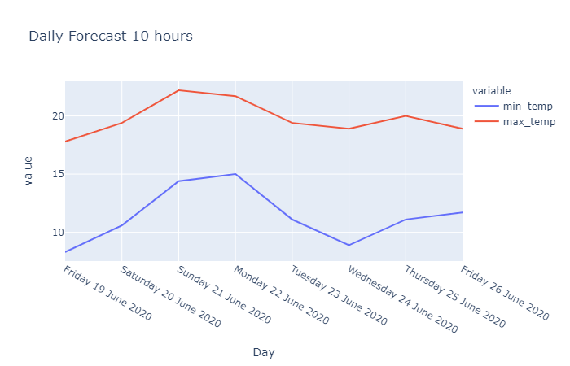

Two json files containing weather data for Perth were provided. One with the 5 day forecast, the other with historical data for a 24 hour period. Our task was to convert this data into specific formats. There were three main sections to this project. Outputs for:
A single time series graph that contains both the minimum and maximum temperatures for each day.
A single time series graph that contains the minimum, minimum “real feel”, and minimum “real feel shade” temperatures.
Code passes the run_tests.py
Daily forecast 10 hrs - daily minimum/maximum temperatures.
Daily forecast 10 hrs - daily minimum temperatures.
Text files that contains a summary of the day conforming to the expected specifically formatted output.